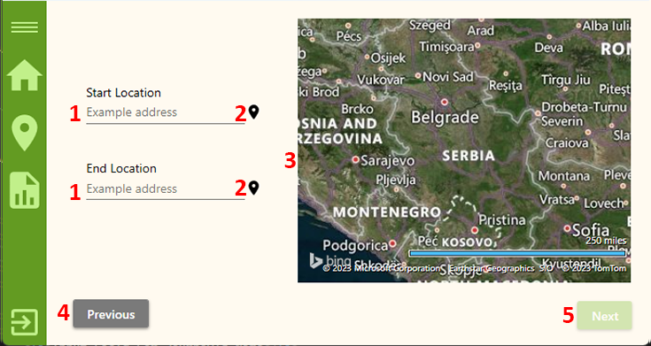

Add atractions
This is the second of two pages for adding/editing attractions that the agent sees after clicking the 'Add Attraction' ('Edit Attraction') button on their home page. The 'Add Attraction's Location' page has the following layout:

- Input field for entering address of attraction
- Button that enable dropping pin location on map
- Map
- Back to previous page
- Button For Submiting Attractino
Input Field For Entering Address Of Attraction
In the Create Attraction window, you will find an address input field that allows you to enter a specific address for the attraction. The address input field provides functionality to search for and display the location on a map based on the entered address. Here's how it works:
- Typing the Address: When entering an address, follow the guidelines provided for formatting the address correctly. The recommended format is [Street] [House Number], [City], [Country]. For example, "Main Street 123, Belgrade, Serbia".
- Auto-Correction and Location Search: As you type the address and press Enter, the system will attempt to search for the corresponding location based on the entered address. If a valid address is found, it will be autocorrected and the location will be displayed on the map with a pin.
- Autocorrection: If the entered address contains minor spelling mistakes or discrepancies, the system will attempt to autocorrect it to the closest matching address. This helps ensure accurate location information for the attraction.
- Displaying the Location: Upon successful location search and autocorrection, the map will display the address with a pin indicating the exact location. This visual representation helps provide a clear reference point for the attraction.
- Error Messages: If the entered address cannot be found or there are issues with the search process, an error message will be displayed. In such cases, double-check the entered address for any errors or try entering a more specific address.
Buttons for enabling pin drop on map
In the Create Attraction window, you will find button that allow you to enable the pin drop functionality on the map. This button provide a convenient way to drop a pin at a specific location on the map, indicatinglocation point for the attraction. Here's how they work:
- Left Pin Drop Button: The right-click pin drop button allows you to drop a pin on the map by right-clicking on the desired location.
- Enabling Pin Drop: To enable pin drop on the map, click the left-click. Once enabled, the map will respond to your clicks, allowing you to drop pins at specific locations.
Map
In the Create Attraction window, you will find an interactive map that allows you to navigate and explore different locations. The map provides various functionalities to help you visualize the attraction. Here's how you can interact with the map:
- Drag to Move: To move your view across the map, click and hold on any part of the map, then drag it in the desired direction. This allows you to explore different areas and navigate to specific regions of interest.
- Scroll Wheel to Zoom: You can use the scroll wheel on your mouse (or trackpad) to zoom in or zoom out on the map. Scroll forward to zoom in, making the map display more detailed information. Scroll backward to zoom out, providing a broader view of the map.
- Double-Click to Zoom In: Double-clicking on the map allows you to quickly zoom in on a specific location. This feature is useful when you want to explore a particular area in more detail.
Previous Page
The Previous button in the stepper allows you to navigate back to the previous step or page within the attraction creation process. This button provides flexibility for making changes or reviewing details from the previous page without losing your progress
Finish with creation proccess
The "Finish" button in the Create Attraction window allows you to complete the attraction creation process and navigate to the list of all attractions. This button finalizes the attraction details and saves it in the system.